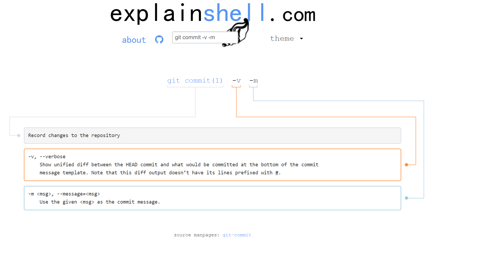

"ls"的作用是 list directory contents，也就是显示当前目录所有文件，但不会显示文件名以"."开头的隐藏文件。 使用"ls -a"命令可以查看隐藏文件；使"ls -l"可以查看文件的更多信息。
用法：进入目录然后使用"ls"命令查看当前目录的内容。
"cat"的作用是 concatenate files and print on the standard output，也就是连接文件并打印到标准输出设备上，也可以用来一次显示整个文件。
用法：进入目录然后使"cat 文件名"查看当前目录指定文件的内容。
mv是move的缩写，"mv"的作用是move (rename) files，也就是移动文件或者将文件改名。
改名用法： "mv 源文件名 新文件名"
"touch"的作用是 change file timestamps，也就是修改文件时间属性（文件最后一次编辑时间），还可以用来创建新的空文件。
用法：修改文件时间属性 "touch 目标文件" 创建新文件"touch 文件名"
进入" explainshell.com"网站,在搜索框输入待查询的命令然后按回车键，就可以看到这个命令的用法了。注意，在注释的时候会把命令的参数单独注释。
比如搜索"git commit -v -m",结果余下：
